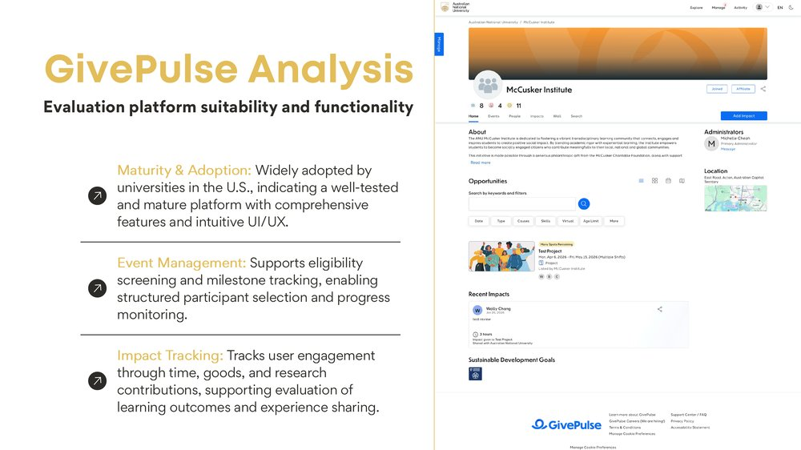
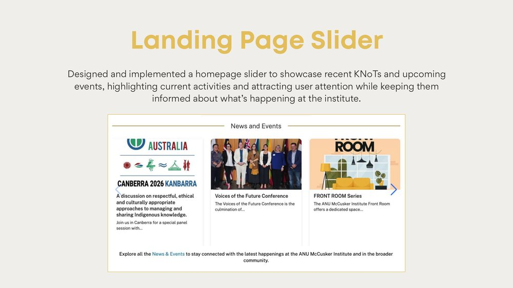
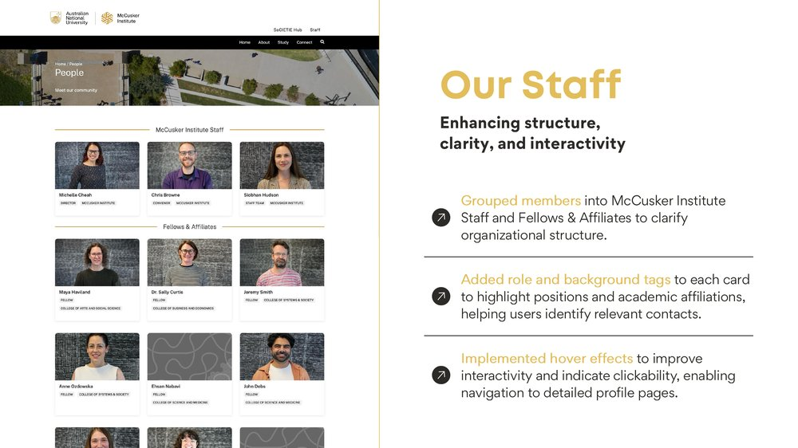
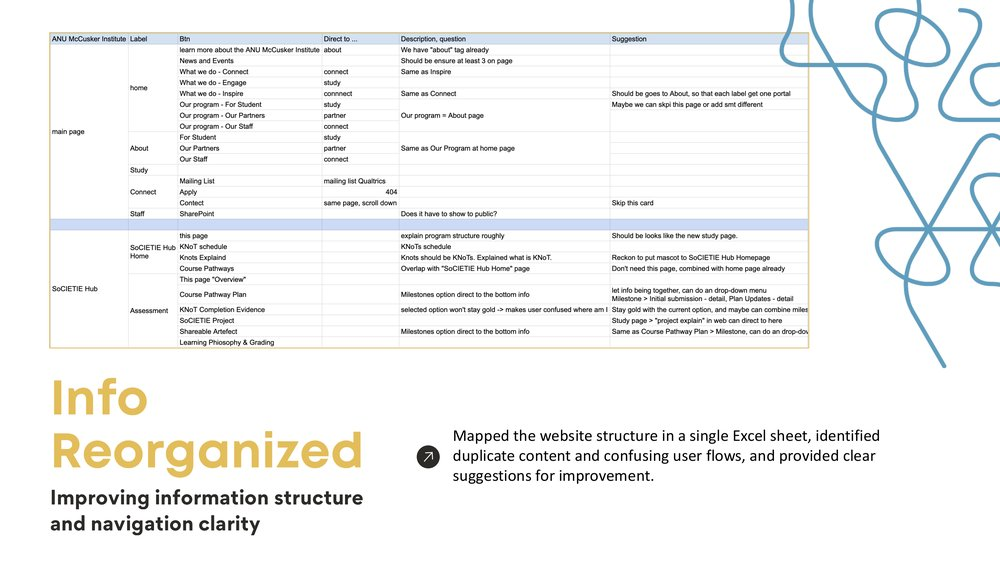
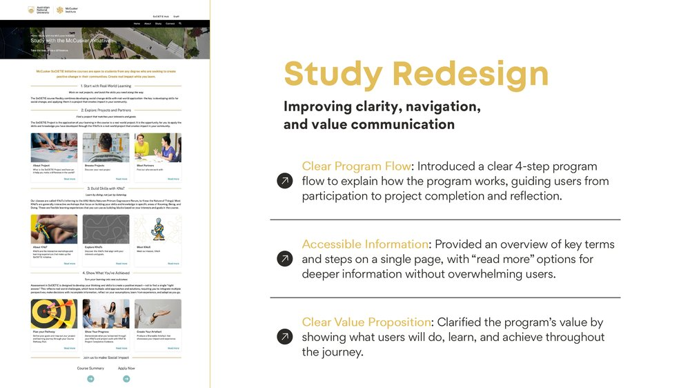

Case Study · Pure Design
Fixing a confusing, low-conversion user journey on an ANU research institute's website
Summary
Returning for a second placement at ANU's McCusker Institute, I led a broader redesign of its public-facing website — auditing the site's full information architecture and redesigning its homepage, staff directory, and main program page to fix a confusing, low-conversion user journey.
Background & Challenge
The McCusker Institute's website was hard to navigate: information about its programs was scattered across pages, the structure wasn't obvious to a first-time visitor, and the site didn't clearly communicate why a student should get involved. Having automated the institute's newsletter workflow the previous semester, I was invited back to take on the public-facing side of the same problem.
Should we build, or should we adopt?
Before redesigning anything, I evaluated GivePulse — a widely-adopted U.S. university platform — against the institute's needs, assessing its maturity, event-management features (eligibility screening, milestone tracking), and impact-tracking capabilities to inform a build-vs-adopt recommendation.

What I Redesigned
Making recent activity visible on arrival
Designed and implemented a homepage slider surfacing recent KNoT sessions and upcoming events, so visitors see the institute's current activity the moment they land on the site, rather than digging for it.

Enhancing structure, clarity, and interactivity
Grouped members into "Institute Staff" and "Fellows & Affiliates" to clarify organisational structure, added role and background tags to each card, and implemented hover effects that signal clickability through to detailed profile pages.

Mapping the whole site before touching a single page
Before redesigning individual pages, I mapped the entire site structure in a single spreadsheet — every label, button, and destination — to identify duplicate content and confusing user flows, and turned that audit into concrete restructuring suggestions.

From confusing to a clear four-step story
The audit identified the "Study" page — the page prospective students land on — as the site's weakest link: an unclear program structure, no clear value proposition, and key information buried several clicks deep.
I redesigned it around a clear four-step program flow, brought key terms and steps onto a single page with optional "read more" detail, and clarified exactly what students would do, learn, and achieve.

Outcome & Reflection
Across the placement, the throughline was the same: find where the site's structure or content was creating confusion, then redesign around a clearer story. The Study page redesign in particular replaced a vague, multi-click journey with a single, scannable four-step flow.
Audited the full site's content and evaluated an external platform to find where clarity was breaking down
Redesigned the site's layout end to end — homepage, staff directory, and core program page
Took part in institute events to deepen my understanding of the programs I was designing for
Looking ahead, the institute and I have identified further opportunities — refining the UI further, adding category-based filtering, building portals for future partners, and having me mentor the next intake of interns.